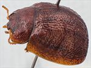
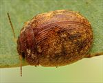
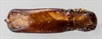
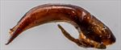
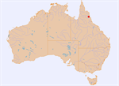

Click on images to enlarge
{kind=link}

Female, Mt Carbine, Northern Queensland
{kind=link}

Male, Mt Carbine, Northern Queensland
{kind=link}

Aedeagus, dorsal view (Mt Carbine, Northern Queensland)
{kind=link}

Aedeagus, lateral view (Mt Carbine, Northern Queensland)
{kind=link}

Distribution
Name
Trachymela sp. Ta48
Reference specimen
1998-0630a, Mt Carbine, North Queensland.
Adult Description
Length: ♂ 5.9–6.0 mm (n=2), ♀ 6.3–6.9 mm (n=2).
Colouration:
- Head: uniformly mid-brown, labrum straw-brown, mandibles with dark brown or black tips; antennomeres 1–4 uniformly straw-brown, 5–11 concolorous with preceding or grading very fractionally darker towards apex, the darker shade usually confined to distal region of antennomeres.
- Pronotum: brown, concolorous with or fractionally darker than head, lateral marginal areas sometimes of a slightly lighter shade.
- Scutellum: brown, concolorous with pronotum, usually with fractionally darker lateral margins.
- Elytra: brown, concolorous with pronotum, usually with a few vaguely delimited bands of a slightly darker shade of brown, one such broad band along elytral suture between scutellum and elytral summit, a thinner band extending from anterior edge about half-way between scutellum and humeral callus towards antero-median depression and another along margin of disc, punctures usually fractionally darker than interstices, humeral callus brown, concolorous with surrounds.
- Venter & Legs: mostly medium brown with lateral sections of metathoracic ventrites usually noticeably darker, legs straw-brown, inside surface of elytral epipleura brown.
- Cuticular Wax: a relatively light and usually unevenly distributed sprinkling of mustard-coloured wax.
Morphology:
- Head: punctures relatively small (pd ≈ 1.5–2× ef), distribution may be even or uneven but quite dense. Antennae short (AL/BL: ♂ 39–41%, ♀ 32%), filiform, outer segments noticeably flattened.
- Pronotum: almost evenly curved transversely with lateral margins only barely explanate, foveal depression absent, whole of foveal area slightly elevated above plane of curvature, sometimes with a small round, pimple-like elevation towards inside edge, puncturation clearly impressed, coarser than those on head and mostly quite evenly and densely distributed in discal area, sometimes interrupted by a thin, longitudinal unpunctured ridge in centre, punctures become much coarser in marginal region, interstices smooth or slightly rough in discal area. Thickened front margins smoothly join thinner lateral margins in a very smooth angle about or slightly greater than 90°, with lateral margin briefly straight before barely curving somewhat unevenly towards posterolateral angle.
- Scutellum: surface relatively smooth with a scatter of punctures a little finer than those on adjacent area of pronotum, or surface rougher, obscuring punctures.
- Elytra: shape rounded, greatest height viewed laterally is clearly in front of middle of elytral margin (PGH: ♂ 53–55% BL, ♀ 53–54% BL); surface evenly curved transversely over discal region, sometimes very slightly explanate at margins, evenly curved longitudinally from just behind scutellum to about 2/3 of distance to apex with curvature increasing from there to apex, a very shallow depression extends across surface just in front of middle, punctures moderately large and relatively evenly distributed between the verrucae and set deeply among the network of interstices, sometimes with a very light scatter of fine punctures on interstices; small verrucae and elevated interstices, most with a small puncture in centre and many oriented transversely, are scattered unevenly over much of elytral disc though usually at a lower density over antero-median depression, with adjacent verrucae often joining into short raised ridges, often transversely; in the scutellar region these may be so closely distributed that they form an almost continuous raised surface, transverse elevated ridges are especially prominent along posterior edge of antero-median depression, suture carinate in posterior third, surface continuous under humeral callus. Vertical extension of epipleura considerable (HCE/PW = 0.39–0.41).
- Venter: prosternal process almost parallel-sided over much of its length, open or very lightly closed anteriorly, short setae very sparsely distributed over prosternal process and mesoventrite, a single seta on anterior and median trochanter; front edge of metaventrite beveled, truncate; inner edge of posterior of epipleurae lacking setae.
Male Genitalia (Aedeagus):
- Dimensions: moderately long (LPE = 32.5% BL).
- Dorsal view: sides of shaft very slightly sinuate, almost parallel from basal sulcus to ostial depression with a barely discernible narrowing in the middle, from its widest point sides converge towards apex in a smooth and very gradual and even arc, dorsal surface with well-defined dorso-median channel that terminates at posterior of ostial depression, dorsolateral channels well defined, two long dorsal ostial processes protrude towards apex in the oval ostial depression, but terminate a little behind the small spatula; tip small but quite pointed and smoothly triangular.
- Lateral view: upper and lower surfaces of shaft almost evenly curved from basal sulcus to near apex, tip deflexed.
Immature Stages
Unknown.
Similar species
- Ta43: this species from central Queensland is very similar to Ta48 structurally and in the shape and dimensions of its aedeagus (though that of Ta48 has a more pointed apex), but is readily distinguishable by its extensive areas of black on both pronotum and elytra.
Notes
- Distribution & Abundance: so far collected from a single location near Mt Carbine, in northern Queensland.
- Host Associations: collected on the box Eucalyptus persistens (subgenus Symphyomyrtus, section Adnataria).
Copyright © 2026. All rights reserved.